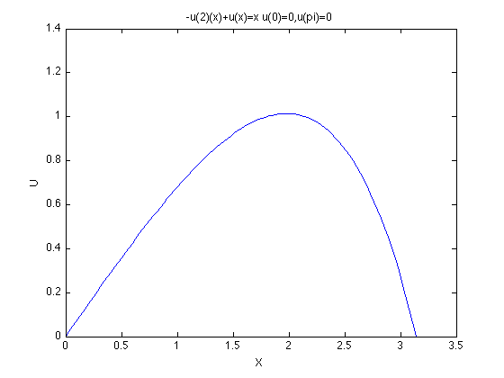

clear; N=16; A=zeros(N,N); for i=1:N A(i,i)=pi/2*(i^2+1); l(i)=pi/i*(-1)^(i-1); end c=A\l'; x=linspace(0,pi,101); for i=1:101 sum=0; for j=1:N sum=sum+c(j)*sin(j*x(i)); end y(i)=sum; end plot(x,y) title('-u(2)(x)+u(x)=x u(0)=0,u(pi)=0') xlabel('X') ylabel('U')